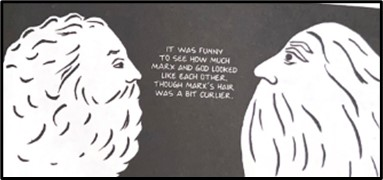

“We actually have a monopoly not only on legitimate violence, which is what
every nation states leaders have, but now, also the values that we are saying
come from our faith, as well.”
—Arzoo Osanloo, “The Woman Question”
At age fourteen, most teens start high school, get their first phone, attend sports games, and
concerts, however, young women in Iran are fighting for their rights per diem. Iranian
illustrator and novelist Marjane Satrapi, recounts her experiences as a child during the 1980’s
Revolution in Iran in her autobiography Persepolis. Using a graphic novel as a format for an
extensive memoir of her childhood in Iran evokes a deeper understanding of violence through the
perspective of a child. The cruel regulation of women in Iran accelerated when Ahmadinejad
became president: “he actually campaigns on this platform that really speaks to a greater
emphasis on so-called traditional roles, what some people might call conservative roles, of
women as nurturers, raising the children and guiding the family” (Abdelfatah). Traditional
values were taught to be the right way and any who opposed them were “Western puppets”
(Abdelfatah). The morality police were created to enforce these traditional ideas. They often
harass, arrest, and harm women who do not follow the strict dress and social codes dictated by
the Iranian clerics: “Iran's morality police force was established in the 1990s to enforce
social rules, like proper hijab for women. Under the Ahmadinejad administration, they became
more aggressive in their enforcement, which included arrests, alleged beatings and sometimes
lashings” (Abdelfatah). With women at the forefront of the movement against the Shah, even the
youngest of girls are called upon to recognize the treachery of their country’s leaders and rise
to fight for the rights of their friends, mothers, sisters, and daughters. Satrapi explores the
relationship between religion as a source of comfort and violence during the Iranian Revolution
through an innocent childhood perspective.
In the chapter The Bicycle, Satrapi introduces the role of God and religion in her childhood as
a source of comfort and admiration prior to the inception of the violent revolution; however,
Satrapi’s childhood innocence falls victim to the increasingly dangerous political climate. In
NPR Thouroughline’s podcast episode “The Woman Question” host Rund Abdelfatah provides important
historical context: “For hundreds of years, Iran was ruled by some kind of shah. A king after
king, ruler after ruler, dominated the country. But in the early 20th century, something
changed. Between 1905 and 1911, Iran experienced its first modern political revolution”
(Abdelfatah). Satrapi was 10 years old in 1980, one year into the Islamic Revolution. Satrapi’s
mother, a powerful and loving woman, protested for women’s rights in Iran leading Satrapi to
aspire to follow in her footsteps and become a prophet. Her desire to become a prophet to save
her people, reflects her faith and loyalty to her God and her religion. Satrapi’s parents are
Marxists and religious; she manifests these beliefs as an imaginary friend offering guidance and
support. Still unsure of who she is, she relies on her parents to define her as she navigates
through her identity and sense of self. Rocio G. Davis, an associate professor of American and
postcolonial literature at the University of Navarra, highlights the intentional artistic
liberties Satrapi incorporated into her novel: “Her early representation of herself stresses the
happy contradictions that often exist in a child's perception of the world, as well as the more
insidious conflicts between her home life– her parents are Marxists who encourage their child's
intellectual development– and public life that includes the pain that a repressive government
causes” (Davis). There are several contrasts to make between the different worlds she lives
during her early childhood. The contrast between Marx and God is an example of this
juxtaposition. Satrapi illustrates a binary between two mentors influenced by her parent’s
beliefs, God and Karl Marx emphasizing their similarities in appearance and in her life:
[Visual figures in the text were referenced here.]
Satrapi refers to the figure as God which highlights her prioritization of her faith rather than
political beliefs:
At this point in her childhood, Satrapi is faithful to her religion and relies on God for
assurance and enlightenment. The dark tides of the revolution have not yet seeped into the
cracks of her immature mind.
However, as the book progresses, Satrapi's perception of her religion and God evolves into one
of conflict and disappointment due to the violent and repressive actions justified under
religious authority. The Islamic Revolution’s impact on women becomes an unignorable force in
her life. In her memoir, the representation of the mandatory veiling is powerful: “We found
ourselves veiled and separated from our friends” (Satrapi). For a child, such sudden and drastic
impositions feel suffocating. While religion initially brought comfort, it now becomes a symbol
of enforced conformity and violence. This transformation is evident in her distancing from God
as a confidant and her increasing reliance on her own agency and observations.
Satrapi’s graphic novel effectively portrays the personal ramifications of systemic oppression
through visual and narrative storytelling. Her juxtaposition of innocence with the brutality of
the regime allows readers to feel the weight of historical events on individuals' lives. By
presenting her perspective as a child, Satrapi invites readers to question the intersections of
faith, governance, and personal identity. The stark black-and-white illustrations further
underline the contrasts and binary struggles she faces. Through her work, Satrapi gives voice to
the many women whose lives were forever changed by the Iranian Revolution, making Persepolis not
just a memoir but a significant historical and cultural critique.
ARTICLES
Marjane Satrapi’s Persepolis: An Exploration of Violence during the Iranian Revolution and a Loss of Faith
Date: December 5, 2022 | Author: Sydney Tsin
This is an essay I wrote for my Syracuse University Project Advanced (SUPA) Reading class. This essay explores the themes of violence, loss of faith, and rebellion in Marjane Satrapi's graphic memoir Persepolis, which recounts her experiences as a child during the Iranian Revolution. It examines the intersection of religion, politics, and personal growth as Satrapi navigates the turbulent environment of 1980s Iran. Through an innocent childhood lens, the essay delves into her evolving relationship with faith—initially a source of comfort and guidance—and the profound impact of political repression, violence, and personal loss on her identity. The analysis also highlights Satrapi's transformation into a rebellious young woman, challenging oppressive societal norms and finding her voice against tyranny. The essay situates Persepolis as a powerful narrative that sheds light on the struggles of Iranian women and the enduring fight for freedom and rights in the face of systemic oppression.
